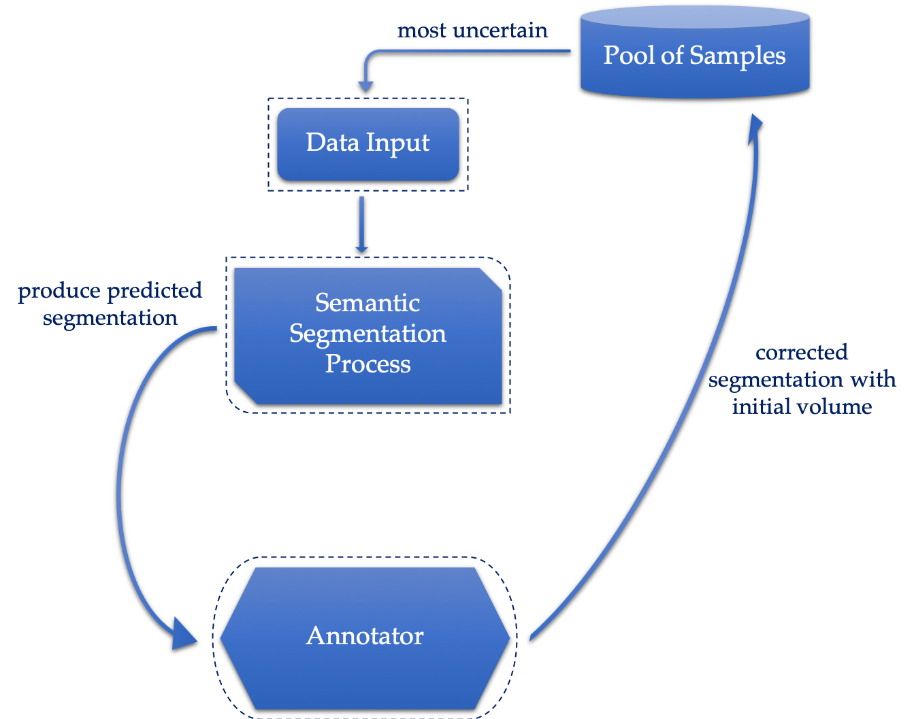

There are two basic concepts you need to understand before you read on to the detailed elaboration of Elisa’s project, namely deep learning and active learning.
For information regarding deep learning, please refer to the Home / About page.
What is active learning?
Active learning techniques are designed for situations in which large amount of data needs to be processed - such as speech signals and image processing and so on. In these situations, some of the data is unlabelled, but obtaining the labels of the data is at high cost. Therefore, computer scientists are interested in labelling the minimal amount of data necessary for obtaining high performance in such programs. The basic idea behind active learning systems is to allow the machine learning algorithms to deliberately choose the data it learns from, so that less data will be needed. This is achieved by asking queries, from an unlabelled set of data, to be annotated and labelled by and oracle (e.g. human annotator).[1]
The Actual Process of the Project

Figure 3: A diagram outlining the general process of the algorithm
Figure 3 outlines the general process (pipeline) of this project. Initially, there is a pool of unlabelled data. The algorithm would pick out the most uncertain ones and pass it through the neural network that the deep learning algorithm uses. A predicted semantic segmentation is then produced. If the predicted version has large uncertainty measurements against the correct segmentation, this predicted segmentation is sent to the annotator. The annotator receives the prediction and using a tool provided, it corrects the segmentation result. This refined segmentation with initial volume is sent back to the algorithm and added to the initial pool of samples again. Then, the network will be retrained. In addition, a cost function can be used to measure the difference between predicted segmentation by the network and the correct segmentation provided by the annotator.